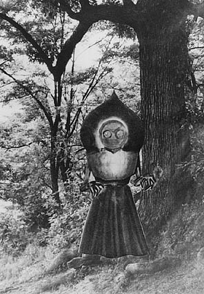
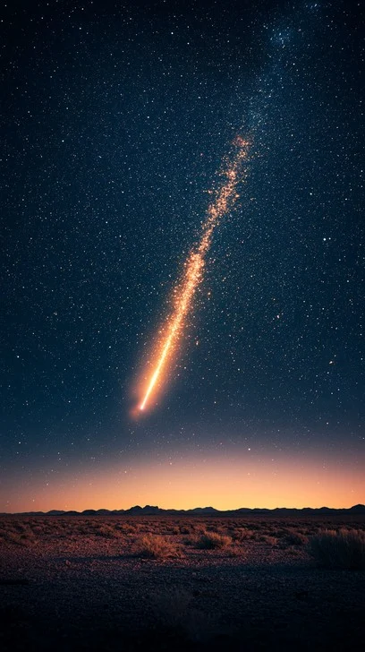
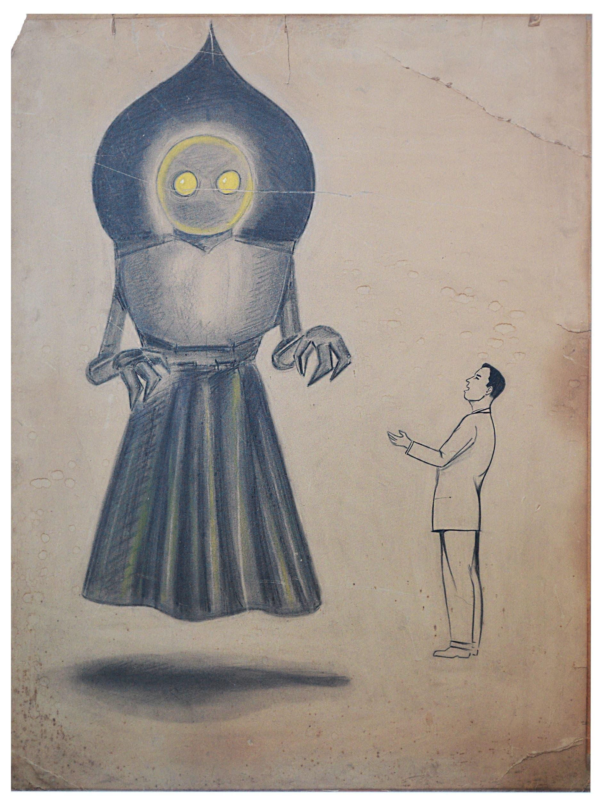
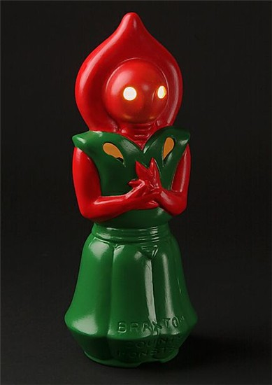

The Night of The Sighting
On a warm September evening in 1952, the small town of Flatwoods, West Virginia, would become the center of one of America's most enduring cryptid mysteries. What began as a bright object streaking across the sky would soon transform into an encounter that would haunt witnesses for decades to come.
Timeline of Events
The Fire in the Sky
At 7:15 PM, a blazing streak of light tore across the evening sky over West Virginia, glowing with an eerie, hellish hue. Many dismissed it as a meteor—but in the small town of Flatwoods, something far stranger was unfolding. Three boys—Eugene Lemon, Neil Nunley, and Tommy Hyer—watched as the object descended toward a nearby hillside.

First Contact
Joined by others, including Kathleen May, they climbed toward the site with only flashlights in hand. Near the Fisher farm, a sharp metallic odor filled the air. Then they saw it.
A towering figure—nearly ten feet tall—emerged from the darkness. Its face burned red, its eyes glowed an unnatural orange, and its form was unmistakably inhuman. For a moment, no one moved.

The Shadow Over Flatwoods
Panic shattered the silence. The group fled, leaving the creature looming behind them—spade-shaped, clawed, and unmoving. In the days that followed, witnesses reported nausea and throat irritation, deepening the mystery.
What began as a streak of light became one of the most chilling cryptid encounters in American history.
